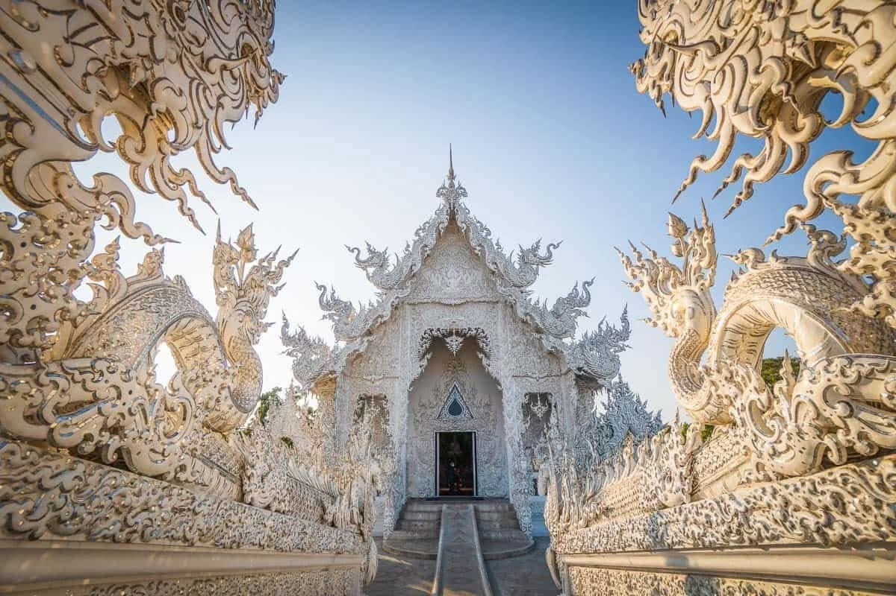

o Wat Ron Khun (templo branco de chiang rai) é uma das atrações mais famosas da Tailândia
Localizado no norte do ís, Wat Ron Khun foi inauguradoo em 1997 pelo artista CharlemChai Kositpitpat.
O templo é muito famoso por ser uma arte viva, concebida para transmitir ensinamentos Budistas, por meio principalmente de elementos visuais.